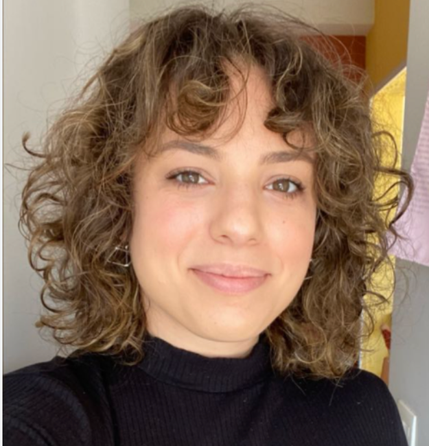
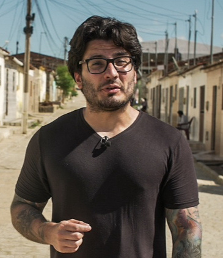

Juliana (Ju) Faddul
Jornalista independente, já publicou em veículos como piauí e Folha de S.Paulo. Investiga temas sociais e ambientais e teve reportagens apoiadas pelo Pulitzer Center.
Três edições realizadas, quarta edição em breve!
Cursos para quem quer encontrar boas pautas, investigar e produzir reportagens relevantes, trabalhando de forma independente ou em redações.
Somos dois jornalistas com mais de 10 anos de experiência e muito interesse em compartilhar o que aprendemos. Já estamos indo para o nosso quarto curso juntos — e esperamos vocês. Veja o que já fizemos e entre na lista de espera para os próximos.
Somos a Ju e o Toledo. Levamos para as aulas o que aprendemos investigando, trabalhando em redações e tirando projetos independentes do papel.

Jornalista independente, já publicou em veículos como piauí e Folha de S.Paulo. Investiga temas sociais e ambientais e teve reportagens apoiadas pelo Pulitzer Center.

Repórter da BBC News Brasil em Londres. É mestre em jornalismo de dados pela Universidade Columbia e em administração pública pela FGV. Investiga políticas públicas com dados e documentos.
As três edições combinam prática, troca entre jornalistas e caminhos para transformar uma ideia em trabalho publicado. Os dois cursos de investigação foram voltados a freelancers; a terceira edição explorou como usar IA para desenvolver ideias sem abrir mão da apuração e da autoria.
Edição 01 · Jornalismo investigativo
Da escolha da pauta à busca de dados, documentos e personagens, com atenção aos desafios de trabalhar fora de uma redação.
Edição 02 · Jornalismo investigativo
Uma nova turma sobre técnicas de investigação, acesso à informação e caminhos para apresentar e financiar pautas.
Edição 03 · Criatividade e IA
Experimentação com ferramentas de IA para encontrar caminhos criativos, construir protótipos e checar resultados com responsabilidade.
Uma boa reportagem começa com uma pergunta. Nossos cursos ajudam a encontrar evidências, testar ideias e dar forma a histórias que merecem ser contadas.
Das primeiras perguntas à publicação, reunimos técnicas de apuração e caminhos para tirar uma reportagem do papel. Os temas variam de um curso para outro.
Nas edições anteriores, priorizamos a participação e a conversa sobre as pautas de cada pessoa. O formato da próxima edição será anunciado com a abertura das inscrições.
Já oferecemos bolsas e descontos para ampliar o acesso aos cursos. As condições da próxima edição serão divulgadas com as inscrições. Para dúvidas, escreva para jornalismoindependentecurso@gmail.com.
O objetivo é sair da aula com perguntas melhores, métodos de apuração e passos concretos para desenvolver uma reportagem. Preço e formas de pagamento serão informados na próxima edição.
Não se convenceu ainda? Então veja o que quem já passou pelos cursos está dizendo por aí. Os relatos foram publicados pelos próprios participantes no LinkedIn; você pode ler cada post na íntegra e acessar a publicação original.
IA e criatividade
Usou as ferramentas do curso para começar um arquivo consultável com mais de 6 mil jogos do Internacional desde 1909. A base ainda estava em desenvolvimento quando publicou o relato.
Jornalismo investigativo
Participou como bolsista e destacou a troca com os professores e a importância de ampliar o acesso à formação.
Jornalismo investigativo
Destacou aulas práticas sobre pautas com dados, personagens, LAI, financiamento e uso de IA na apuração.
Jornalismo investigativo
Relatou ter aprendido a explorar planilhas, usar a LAI e pensar em estratégias para vender pautas.
Jornalismo investigativo
Descreveu o curso como uma imersão em jornalismo de dados e transparência pública, com dicas práticas para a carreira.
Jornalismo investigativo
Disse que a troca de experiências ajudou a destravar pautas que pretendia publicar.
Jornalismo investigativo
Destacou a troca entre profissionais de diferentes regiões e as discussões sobre como vender pautas e construir credibilidade.
Jornalismo investigativo
Participou como bolsista e disse que a experiência reacendeu seu interesse pelo jornalismo.
Jornalismo investigativo
Compartilhou o aprendizado sobre venda de pautas, LAI, Portal da Transparência e ferramentas de IA para jornalismo de dados.
Jornalismo investigativo
Considerou inspiradoras as conversas sobre investigação, cobertura internacional e trabalho freelancer em um momento de decisões na carreira.
Estamos preparando nosso quarto curso juntos! Ainda não há data prevista. Entre na lista de espera para receber novidades dos cursos da Ju e do Toledo.
Entrar na lista de espera